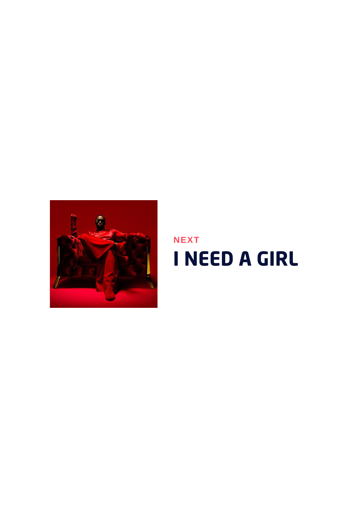
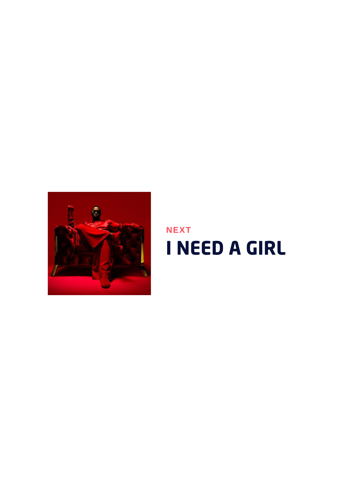

PDD // NEWS
Every artist has their muse. But only
some would kill for you
Widely recognized for his influence in the music industry, Diddy has not only shaped the careers of iconic artists but also established himself as a cultural mogul. Beyond his musical endeavors, he has ventured into fashion, launching the successful Sean John clothing line, which has become a staple in urban fashion. His entrepreneurial spirit extends to various ventures, including fragrance lines, television production, and even the beverage industry with Ciroc Vodka. Diddy's ability to innovate and adapt has made him a prominent figure not just in music, but across multiple industries, solidifying his legacy as a dynamic and influential force in contemporary culture.
JANICE COMBS
MELVIN EARL COMBS
NOVEMBER 4, 1969
PDD // NEWS
You know what they say about kings.
There is always a crown to take
Known for his distinctive voice and extraordinary stage presence, Jackson's influence transcended music, impacting dance, fashion, and popular culture. His groundbreaking music videos, such as "Thriller", "Beat It", and "Billie Jean", not only set a new standard for the industry but also helped to transform the medium into an art form. Jackson's innovative approach to choreography and his signature dance move, the moonwalk, became synonymous with his name. Beyond his artistic contributions, Jackson was also deeply committed to humanitarian efforts, supporting numerous charities and causes throughout his life. Despite facing various controversies, his legacy as a trailblazer and pioneer in the entertainment world remains undeniable, continuing to inspire artists and fans alike across the globe.
KATHERINE JACKSON
JOE JACKSON
AUGUST 29, 1958
PDD // NEWS
Not as slick as an agent.
Not as sharp as a sparrow
The house sparrow is adaptable and thrives near humans, commonly found in urban areas where it benefits from food and nesting opportunities. Its diet includes seeds, grains, and insects. These social birds often gather in flocks, communicating with various chirps. Known for their energetic behavior, they hop on the ground and perch on structures. They build nests in available crevices using twigs, grasses, and feathers. House sparrows are important for ecosystems as prey and seed dispersers. However, some populations have declined due to urban changes and food availability, leading to conservation efforts to protect these familiar birds.
MARIA CLARA
CRISOSTOMO IBARRA
FEBRUARY 30, 1999


 
